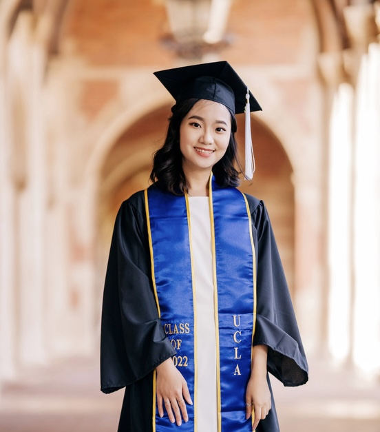

Una Kuo

Summary
Hello, I'm Una Kuo. I graduated from University of California, Los Angeles (UCLA) with a Bachelor of Arts degree
in sociology and minor in education studies in June 2022.
I am skilled in conducting qualitative research, Canva, Microsoft office, Google workplace, basic video editing, and project coordination.
Currently, I am a web development learner on Udemy.
Education
- Bachelor of Arts, Sociology. Minor: Education Studies- University of California, Los Angeles (UCLA) (09/2020-06/2022)
- GPA: 3.972
- Latin Honors: SUMMA CUM LAUDE
- Associate of Arts, Human Development Studies- Ohlone College (08/2017-12/2019)
Work Experience
- Junior People Associate- Easyship
February 2023 - April 2023
- Coordinated and onboarded new joiners to the company on a global scale.
- Conducted research for policymaking and implementation.
- Prepared HR-related documents or agreements.
- Initiated the office move independently by liaising with different external partners, such as the real estate agent, removals company, remodeling company, electricity and water company, building management, locker vendor, internet vendor, furniture vendor, and cleaning company. Completed the project within one and a half months.
- Managed employee files, and update internal databases when needed.
- Created reports and presentations on HR metrics.
- Managed company assets by keeping track of the asset list with excel.
- Organizing employee-engagement events to build connection.
- Served as a point of contact for employees' queries about HR-related issues (Taiwan employees mostly).
- Liaised with external partners, such as accountants, building management, and different vendors to ensure company and employee needs are met.
- Outreach Assistant- Undergraduate Student Association Council (USAC), Office of Transfer Student Representative- Internal Relations
September 2021 - June 2022
- Conducted Transfer Awareness Training to other organizations in UCLA to advocate for student rights.
- Implemented a project for Student Wellness Commission's You Belong Here campaign and led a zoom event for students to distress.
- Designed a digital Transfer Student Survival Guide to help incoming transfer students familiarize themselves with UCLA academic resources.
- Hotel Receptionist- Wountain Hotel
August 2020 - May 2021
- Hotel check-in and check-out procedures.
- Manage hotel reservations.
- Manage social media platforms and create content posting.
- Answering phone calls.
- Serving amenities to customers and meeting their needs.
Skills
- Qualitative research
- Canva layout design
- Microsoft Office
- Google Workplace
- Slack
- iMovie
- Event planning
- Contract negotiation
- Project coordination
Languages
- English - Proficient
- Mandarin - Proficient
- Taiwanese- Intermediate
Awards and Certification
- TOEIC Certification: Gold Level (Score: 870)
- ASOC Leadership Scholarship (2019)- Ohlone College
Other